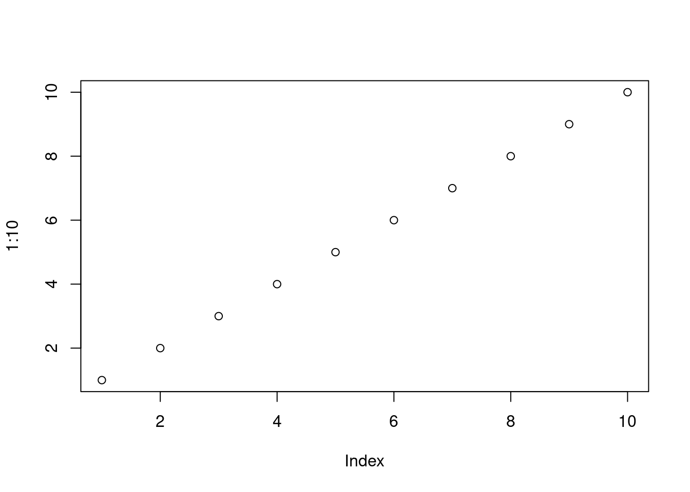
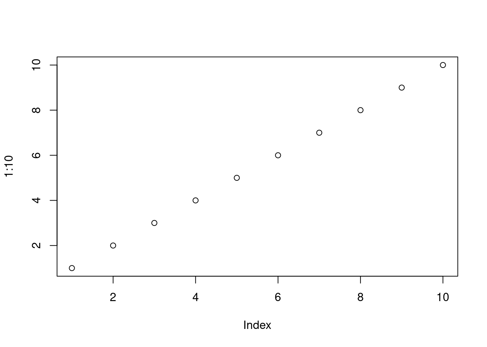
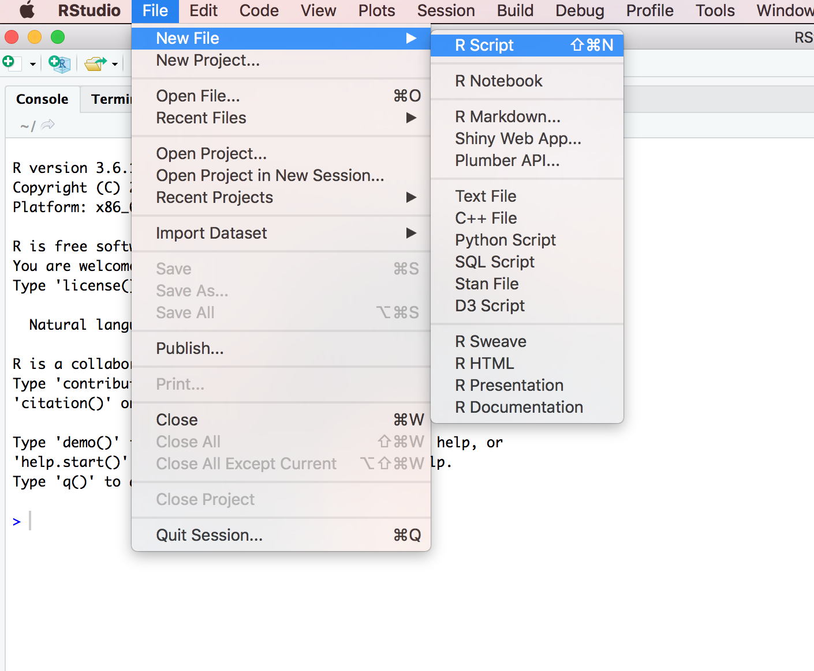
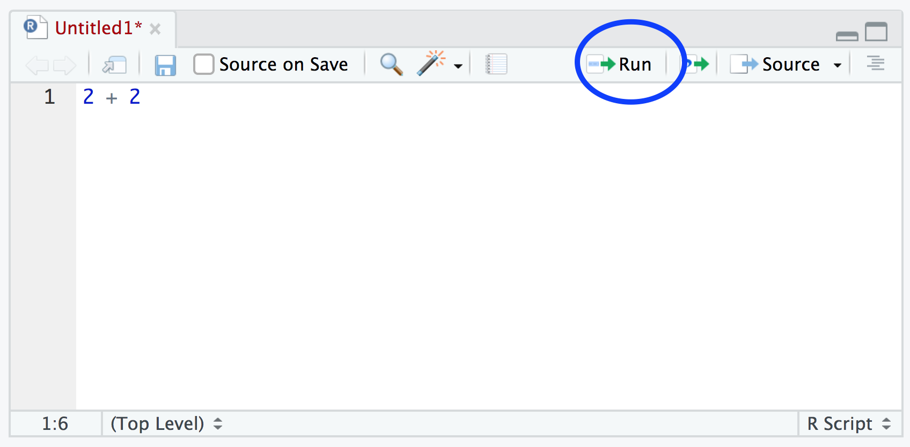
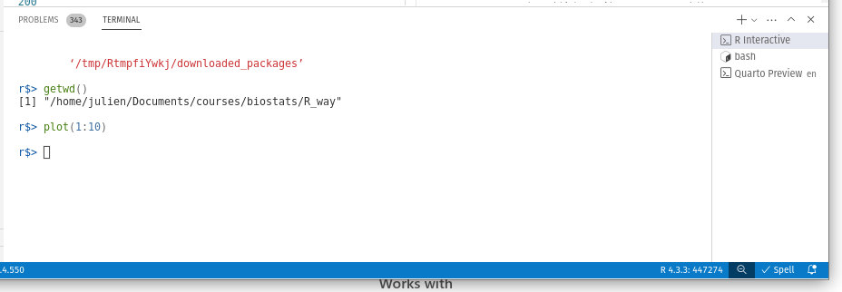
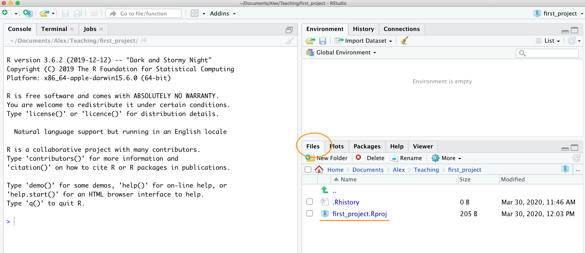
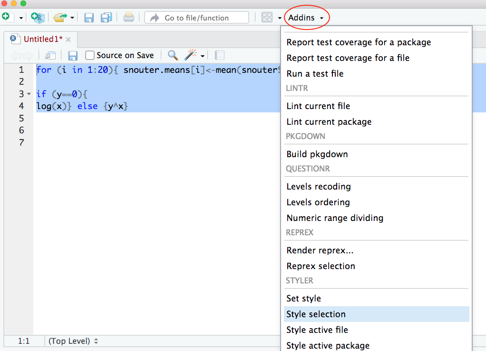
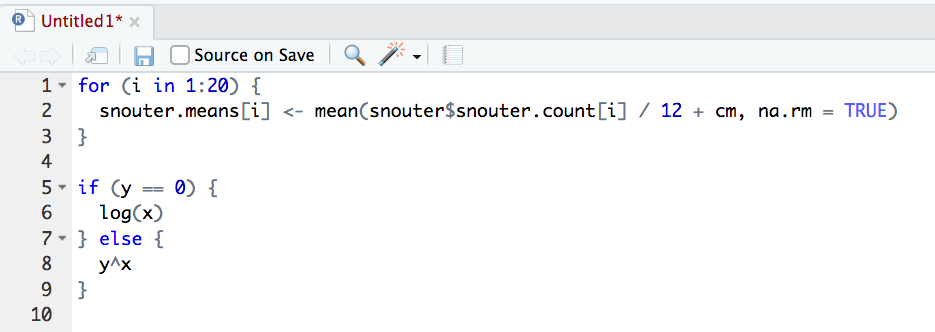

plot(1:10)
Although R is not new, its popularity has increased rapidly over the last 10 years or so (see here for some interesting data). It was originally created and developed by Ross Ihaka and Robert Gentleman during the 1990’s with the first stable version released in 2000. Nowadays R is maintained by the R Development Core Team. So, why has R become so popular and why should you learn how to use it? Some reasons include:
All of the reasons above are great reasons to use R. However, in our opinion, the single biggest reason to use R is that it facilitates robust and reproducible research practices. In contrast to more traditional ‘point and click’ software, writing code ensures you have a permanent and accurate record of all the methods you used (and decisions you made) for your data analysis. You are then able to share this code (and your data) with other researchers / colleagues / journal reviewers who will be able to reproduce your analysis exactly. This is one of the tenets of open science. We will cover other topics to facilitate open science throughout this book, including creating reproducible reports and version control.
In this Chapter we’ll cover:
To get up and running the first thing you need to do is install R. R is freely available for Windows, Mac and Linux operating systems from the Comprehensive R Archive Network (CRAN) website. For Windows and Mac users we suggest you download and install the pre-compiled binary versions. There are reasonably comprehensive instruction to install R for each OS (Windows,Mac or linux ).
Whichever operating system you’re using, once you have installed R you need to check its working properly. The easiest way to do this is to start R by double clicking on the R icon (Windows or Mac) or by typing R into the Console (Linux). You should see the R Console and you should be able to type R commands into the Console after the command prompt >. Try typing the following R code and then press enter
plot(1:10)
A plot of the numbers 1 to 10 on both the x and y axes should appear. If you see this, you’re good to go. If not then we suggest you make a note of any errors produced and then use Google to troubleshoot.
We strongly recommend to use an Integrated Development Environment (IDE) software to work with R. One simple and extremely popular IDE is RStudio. An alternative to RStudio is Visual Studio Code, or VSCode. An IDE can be thought of as an add-on to R which provides a more user-friendly interface, incorporating the R Console, a script editor and other useful functionality (like R markdown and Git Hub integration).
RStudio is freely available for Windows, Mac and Linux operating systems and can be downloaded from the RStudio site. You should select the ‘RStudio Desktop’ version. Note: you must install R before you install RStudio (see previous section for details).
VSCode is freely available for Windows, Mac and Linux operating systems and can be downloaded from the VS Code site. Note: you must install R before you install RStudio (see previous section for details). In addition you need to install the R extension to VSCode.
Rather than using an ‘all in one’ IDE many people choose to use R and a separate script editor to write and execute R code. If you’re not familiar with what a script editor is, you can think of it as a bit like a word processor but specifically designed for writing code. Happily, there are many script editors freely available so feel free to download and experiment until you find one you like. Some script editors are only available for certain operating systems and not all are specific to R. Suggestions for script editors are provided below. Which one you choose is up to you: one of the great things about R is that YOU get to choose how you want to use R.
A light yet efficient way to work with R is using advanced text editors such as:
These environments are more powerful than simple text editors, and are similar to RStudio:
When you open R studio for the first time you should see the following layout (it might look slightly different on a Windows computer).

The large window (aka pane) on the left is the Console window. The window on the top right is the Environment / History / Connections pane and the bottom right window is the Files / Plots / Packages / Help / Viewer window. We will discuss each of these panes in turn below. You can customise the location of each pane by clicking on the ‘Tools’ menu then selecting Global Options –> Pane Layout. You can resize the panes by clicking and dragging the middle of the window borders in the direction you want. There are a plethora of other ways to customise RStudio.
The Console is the workhorse of R. This is where R evaluates all the code you write. You can type R code directly into the Console at the command line prompt, >. For example, if you type 2 + 2 into the Console you should obtain the answer 4 (reassuringly). Don’t worry about the [1] at the start of the line for now.

However, once you start writing more R code this becomes rather cumbersome. Instead of typing R code directly into the Console a better approach is to create an R script. An R script is just a plain text file with a .R file extension which contains your lines of R code. These lines of code are then sourced into the R Console line by line. To create a new R script click on the ‘File’ menu then select New File –> R Script.

Notice that you have a new window (called the Source pane) in the top left of RStudio and the Console is now in the bottom left position. The new window is a script editor and where you will write your code.

To source your code from your script editor to the Console simply place your cursor on the line of code and then click on the ‘Run’ button in the top right of the script editor pane.

You should see the result in the Console window. If clicking on the ‘Run’ button starts to become tiresome you can use the keyboard shortcut ‘ctrl + enter’ (on Windows and Linux) or ‘cmd + enter’ (on Mac). You can save your R scripts as a .R file by selecting the ‘File’ menu and clicking on save. Notice that the file name in the tab will turn red to remind you that you have unsaved changes. To open your R script in RStudio select the ‘File’ menu and then ‘Open File…’. Finally, its worth noting that although R scripts are saved with a .R extension they are actually just plain text files which can be opened with any text editor.
The Environment / History / Connections window shows you lots of useful information. You can access each component by clicking on the appropriate tab in the pane.
The ‘Environment’ tab displays all the objects you have created in the current (global) environment. These objects can be things like data you have imported or functions you have written. Objects can be displayed as a List or in Grid format by selecting your choice from the drop down button on the top right of the window. If you’re in the Grid format you can remove objects from the environment by placing a tick in the empty box next to the object name and then click on the broom icon. There’s also an ‘Import Dataset’ button which will import data saved in a variety of file formats. However, we would suggest that you don’t use this approach to import your data as it’s not reproducible and therefore not robust (see Chapter 3 for more details).
The ‘History’ tab contains a list of all the commands you have entered into the R Console. You can search back through your history for the line of code you have forgotten, send selected code back to the Console or Source window. We usually never use this as we always refer back to our R script.
The ‘Connections’ tab allows you to connect to various data sources such as external databases.
The ‘Files’ tab lists all external files and directories in the current working directory on your computer. It works like file explorer (Windows) or Finder (Mac). You can open, copy, rename, move and delete files listed in the window.
The ‘Plots’ tab is where all the plots you create in R are displayed (unless you tell R otherwise). You can ‘zoom’ into the plots to make them larger using the magnifying glass button, and scroll back through previously created plots using the arrow buttons. There is also the option of exporting plots to an external file using the ‘Export’ drop down menu. Plots can be exported in various file formats such as jpeg, png, pdf, tiff or copied to the clipboard (although you are probably better off using the appropriate R functions to do this - see Chapter 4 for more details).
The ‘Packages’ tab lists all of the packages that you have installed on your computer. You can also install new packages and update existing packages by clicking on the ‘Install’ and ‘Update’ buttons respectively.
The ‘Help’ tab displays the R help documentation for any function. We will go over how to view the help files and how to search for help in Chapter 2.
The ‘Viewer’ tab displays local web content such as web graphics generated by some packages.

Contains :


Includes:

Contains:

The base installation of R comes with many useful packages as standard. These packages will contain many of the functions you will use on a daily basis. However, as you start using R for more diverse projects (and as your own use of R evolves) you will find that there comes a time when you will need to extend R’s capabilities. Happily, many thousands of R users have developed useful code and shared this code as installable packages. You can think of a package as a collection of functions, data and help files collated into a well defined standard structure which you can download and install in R. These packages can be downloaded from a variety of sources but the most popular are CRAN, Bioconductor and GitHub. Currently, CRAN hosts over 15000 packages and is the official repository for user contributed R packages. Bioconductor provides open source software oriented towards bioinformatics and hosts over 1800 R packages. GitHub is a website that hosts git repositories for all sorts of software and projects (not just R). Often, cutting edge development versions of R packages are hosted on GitHub so if you need all the new bells and whistles then this may be an option. However, a potential downside of using the development version of an R package is that it might not be as stable as the version hosted on CRAN (it’s in development!) and updating packages won’t be automatic.
To install a package from CRAN you can use the install.packages() function. For example if you want to install the remotes package enter the following code into the Console window of RStudio (note: you will need a working internet connection to do this)
install.packages("remotes", dependencies = TRUE)You may be asked to select a CRAN mirror, just select ‘0-cloud’ or a mirror near to your location. The dependencies = TRUE argument ensures that additional packages that are required will also be installed.
It’s good practice to regularly update your previously installed packages to get access to new functionality and bug fixes. To update CRAN packages you can use the update.packages() function (you will need a working internet connection for this)
update.packages(ask = FALSE)The ask = FALSE argument avoids having to confirm every package download which can be a pain if you have many packages installed.
To install packages from Bioconductor the process is a little different. You first need to install the BiocManager package. You only need to do this once unless you subsequently reinstall or upgrade R
install.packages("BiocManager", dependencies = TRUE)Once the BiocManager package has been installed you can either install all of the ‘core’ Bioconductor packages with
BiocManager::install()or install specific packages such as the ‘GenomicRanges’ and ‘edgeR’ packages
BiocManager::install(c("GenomicRanges", "edgeR"))To update Bioconductor packages just use the BiocManager::install() function again
BiocManager::install(ask = FALSE)Again, you can use the ask = FALSE argument to avoid having to confirm every package download.
There are multiple options for installing packages hosted on GitHub. Perhaps the most efficient method is to use the install_github() function from the remotes package (you installed this package previously). Before you use the function you will need to know the GitHub username of the repository owner and also the name of the repository. For example, the development version of dplyr from Hadley Wickham is hosted on the tidyverse GitHub account and has the repository name ‘dplyr’ (just Google ‘github dplyr’). To install this version from GitHub use
remotes::install_github("tidyverse/dplyr")The safest way (that we know of) to update a package installed from GitHub is to just reinstall it using the above command.
Once you have installed a package onto your computer it is not immediately available for you to use. To use a package you first need to load the package by using the library() function. For example, to load the remotes package you previously installed
The library() function will also load any additional packages required and may print out additional package information. It is important to realise that every time you start a new R session (or restore a previously saved session) you need to load the packages you will be using. We tend to put all our library() statements required for our analysis near the top of our R scripts to make them easily accessible and easy to add to as our code develops. If you try to use a function without first loading the relevant R package you will receive an error message that R could not find the function. For example, if you try to use the install_github() function without loading the remotes package first you will receive the following error
install_github("tidyverse/dplyr")
# Error in install_github("tidyverse/dplyr") :
# could not find function "install_github"Sometimes it can be useful to use a function without first using the library() function. If, for example, you will only be using one or two functions in your script and don’t want to load all of the other functions in a package then you can access the function directly by specifying the package name followed by two colons and then the function name
remotes::install_github("tidyverse/dplyr")This is how we were able to use the install() and install_github() functions above without first loading the packages BiocManager and remotes. Most of the time we recommend using the library() function.
As with most things in life, when it comes to dealing with data and data analysis things are so much simpler if you’re organised. Clear project organisation makes it easier for both you (especially the future you) and your collaborators to make sense of what you’ve done. There’s nothing more frustrating than coming back to a project months (sometimes years) later and have to spend days (or weeks) figuring out where everything is, what you did and why you did it. A well documented project that has a consistent and logical structure increases the likelihood that you can pick up where you left off with minimal fuss no matter how much time has passed. In addition, it’s much easier to write code to automate tasks when files are well organised and are sensibly named. This is even more relevant nowadays as it’s never been easier to collect vast amounts of data which can be saved across 1000’s or even 100,000’s of separate data files. Lastly, having a well organised project reduces the risk of introducing bugs or errors into your workflow and if they do occur (which inevitably they will at some point), it makes it easier to track down these errors and deal with them efficiently.
There are also a few simple steps you can take right at the start of any project to help keep things shipshape.
A great way of keeping things organized is to use RStudio Projects or VSCode workspaces, referred after as project. A project keeps all of your R scripts, R markdown documents, R functions and data together in one place. The nice thing about project is that each has its own directory, history and source documents so different analyses that you are working on are kept completely separate from each other. This means that you can very easily switch between projects without fear of them interfering with each other.
To create a project, open RStudio and select File -> New Project... from the menu. You can create either an entirely new project, a project from an existing directory or a version controlled project (see the GitHub Chapter for further details about this). In this Chapter we will create a project in a new directory.

You can also create a new project by clicking on the ‘Project’ button in the top right of RStudio and selecting ‘New Project…’

In the next window select ‘New Project’.

Now enter the name of the directory you want to create in the ‘Directory name:’ field (we’ll call it first_project for this Chapter). If you want to change the location of the directory on your computer click the ‘Browse…’ button and navigate to where you would like to create the directory. We always tick the ‘Open in new session’ box as well. Finally, hit the ‘Create Project’ to create the new project.

Once your new project has been created you will now have a new folder on your computer that contains an RStudio project file called first_project.Rproj. This .Rproj file contains various project options (but you shouldn’t really interact with it) and can also be used as a shortcut for opening the project directly from the file system (just double click on it). You can check this out in the ‘Files’ tab in RStudio (or in Finder if you’re on a Mac or File Explorer in Windows).

The last thing we suggest you do is select Tools -> Project Options... from the menu. Click on the ‘General’ tab on the left hand side and then change the values for ‘Restore .RData into workspace at startup’ and ‘Save workspace to .RData on exit’ from ‘Default’ to ‘No’. This ensures that every time you open your project you start with a clean R session. You don’t have to do this (many people don’t) but we prefer to start with a completely clean workspace whenever we open our projects to avoid any potential conflicts with things we have done in previous sessions (sometimes leading to surprising results and headaches figuring out the problem). The downside to this is that you will need to rerun your R code every time you open your project.

Now that you have an RStudio project set up you can start creating R scripts (or R markdown documents) or whatever you need to complete you project. All of the R scripts will now be contained within the RStudio project and saved in the project folder.
workspace are similar to RStudio projects. You however need to create a new folder with a R file (or text file) and save as workspace.
The working directory is the default location where R will look for files you want to load and where it will put any files you save. One of the great things about using RStudio Projects is that when you open a project it will automatically set your working directory to the appropriate location. You can check the file path of your working directory by using either getwd() or here() functions
getwd()[1] "/home/julien/Documents/courses/biostats/R_way/en"In the example above, the working directory is a folder called ‘R_way’ which is a subfolder of “biostats’ in the ‘courses’ folder which in turn is in a ‘Documents’ folder located in the ‘julien’ folder which itself is in the ‘home’ folder. On a Windows based computer our working directory would also include a drive letter (i.e. C:\home\julien\Documents\courses\biostats\R_way).
If you weren’t using an IDE then you would have to set your working directory using the setwd() function at the start of every R script (something we did for many years).
setwd("/home/julien/Documents/courses/biostats/R_way/")However, the problem with setwd() is that it uses an absolute file path which is specific to the computer you are working on. If you want to send your script to someone else (or if you’re working on a different computer) this absolute file path is not going to work on your friend/colleagues computer as their directory configuration will be different (you are unlikely to have a directory structure /home/julien/Documents/courses/biostats/ on your computer). This results in a project that is not self-contained and not easily portable. IDEs solves this problem by allowing you to use relative file paths which are relative to the Root project directory. The Root project directory is just the directory that contains the .Rproj file in Rstudio (first_project.Rproj in our case) or the base folder of your workspace in VScode. If you want to share your analysis with someone else, all you need to do is copy the entire project directory and send to your to your collaborator. They would then just need to open the project file and any R scripts that contain references to relative file paths will just work. For example, let’s say that you’ve created a subdirectory called data in your Root project directory that contains a csv delimited datile called mydata.csv (we will cover directory structures below). To import this datile in an RStudio project using the read.csv() function (don’t worry about this now, we will cover this in much more detail in Chapter 3) all you need to include in your R script is
dat <- read.csv("data/mydata.csv")Because the file path data/mydata.csv is relative to the project directory it doesn’t matter where you collaborator saves the project directory on their computer it will still work.
If you weren’t using an RStudio project or VScode workspace then you would need to either set the working directory providing the full path to your directory or specify the full path of the data file. Neither option would be reproducible on other computers
or
dat <- read.csv("/home/julien/Documents/courses/biostats/R_way/data/mydata.csv")For those of you who want to take the notion of relative file paths a step further, take a look at the here() function in the here package. The here() function allows you to build file paths for any file relative to the project root directory that are also operating system agnostic (works on a Mac, Windows or Linux machine). For example, to import our mydata.csv file from the data directory just use
In addition to using RStudio Projects, it’s also really good practice to structure your working directory in a consistent and logical way to help both you and your collaborators. We frequently use the following directory structure in our R based projects
In our working directory we have the following directories:
Root - This is your project directory containing your .Rproj file. We tend to keep all the R scripts or [Rq]md document necessary for the analysis / report in this root folder.
data - We store all our data in this directory. The subdirectory called data contains raw data files and only raw data files. These files should be treated as read only and should not be changed in any way. If you need to process/clean/modify your data do this in R (not MS Excel) as you can document (and justify) any changes made. Any processed data should be saved to a separate file and stored in the processed_data subdirectory. Information about data collection methods, details of data download and any other useful metadata should be saved in a text document (see README text files below) in the metadata subdirectory.
functions - This is an optional directory where we save all of the custom R functions we’ve written for the current analysis. These can then be sourced into R using the source() function.
scripts - An optional directory where we save our R markdown documents and/or the main R scripts we have written for the current project are saved here if not in the root folder.
output - Outputs from our R scripts such as plots, HTML files and data summaries are saved in this directory. This helps us and our collaborators distinguish what files are outputs and which are source files.
Of course, the structure described above is just what works for us most of the time and should be viewed as a starting point for your own needs. We tend to have a fairly consistent directory structure across our projects as this allows us to quickly orientate ourselves when we return to a project after a while. Having said that, different projects will have different requirements so we happily add and remove directories as required.
You can create your directory structure using Windows Explorer (or Finder on a Mac) or within your IDE by clicking on the ‘New folder’ button in the ‘Files’ pane.
An alternative approach is to use the dir.create() functions in the R Console
# create directory called 'data'
dir.create("data")What you call your files matters more than you might think. Naming files is also more difficult than you think. The key requirement for a ‘good’ file name is that it’s informative whilst also being relatively short. This is not always an easy compromise and often requires some thought. Ideally you should try to avoid the following!

Although there’s not really a recognized standard approach to naming files (actually there is, just not everyone uses it), there are a couple of things to bear in mind.
First, avoid using spaces in file names by replacing them with underscores or even hyphens. Why does this matter? One reason is that some command line software (especially many bioinformatic tools) won’t recognise a file name with a space and you’ll have to go through all sorts of shenanigans using escape characters to make sure spaces are handled correctly. Even if you don’t think you will ever use command line software you may be doing so indirectly. Take R markdown for example, if you want to render an R markdown document to pdf using the rmarkdown package you will actually be using a command line LaTeX engine under the hood (called Pandoc). Another good reason not to use spaces in file names is that it makes searching for file names (or parts of file names) using regular expressions in R (or any other language) much more difficult.
For the reasons given above, also avoid using special characters (i.e. @£$%^&*(:/) in your file names.
If you are versioning your files with sequential numbers (i.e. file1, file2, file3 …) and you have more than 9 files you should use 01, 02, 03 .. 10 as this will ensure the files are printed in the correct order (see what happens if you don’t). If you have more than 99 files then use 001, 002, 003… etc.
If your file names include dates, use the ISO 8601 format YYYY-MM-DD (or YYYYMMDD) to ensure your files are listed in proper chronological order.
Never use the word final in any file name - it never is!
Whatever file naming convention you decide to use, try to adopt early, stick with it and be consistent. You’ll thank us!
A quick note or two about writing R code and creating R scripts. Unless you’re doing something really quick and dirty we suggest that you always write your R code as an R script. R scripts are what make R so useful. Not only do you have a complete record of your analysis, from data manipulation, visualisation and statistical analysis, you can also share this code (and data) with friends, colleagues and importantly when you submit and publish your research to a journal. With this in mind, make sure you include in your R script all the information required to make your work reproducible (author names, dates, sampling design etc). This information could be included as a series of comments # or, even better, by mixing executable code with narrative into an R markdown document. It’s also good practice to include the output of the sessionInfo() function at the end of any script which prints the R version, details of the operating system and also loaded packages. A really good alternative is to use the session_info() function from the xfun package for a more concise summary of our session environment.
Here’s an example of including meta-information at the start of an R script
# Title: Time series analysis of snouters
# Purpose : This script performs a time series analyses on
# snouter count data.
# Data consists of counts of snouter species
# collected from 18 islands in the Hy-yi-yi
# archipelago between 1950 and 1957.
# For details of snouter biology see:
# https://en.wikipedia.org/wiki/Rhinogradentia
# Project number: #007
# datile: snouter_pop.txt
# Author: A.
Nother
# Contact details: a.nother@uir.ac.uk
# Date script created: Mon Dec 2 16:06:44 2019 -----------
# Date script last modified: Thu Dec 12 16:07:12 2019 ----
# package dependencies
library(PopSnouter)
library(ggplot2)
print("put your lovely R code here")
# good practice to include session information
xfun::session_info()This is just one example and there are no hard and fast rules so feel free to develop a system that works for you. A really useful shortcut in RStudio is to automatically include a time and date stamp in your R script. To do this, write ts where you want to insert your time stamp in your R script and then press the ‘shift + tab’ keys. RStudio will magically convert ts into the current date and time and also automatically comment out this line with a #. Another really useful RStudio shortcut is to comment out multiple lines in your script with a # symbol. To do this, highlight the lines of text you want to comment and then press ‘ctrl + shift + c’ (or ‘cmd + shift + c’ on a mac). To uncomment the lines just use ‘ctrl + shift + c’ again.
In addition to including metadata in your R scripts it’s also common practice to create a separate text file to record important information. By convention these text files are named README. We often include a README file in the directory where we keep our raw data. In this file we include details about when data were collected (or downloaded), how data were collected, information about specialised equipment, preservation methods, type and version of any machines used (i.e. sequencing equipment) etc. You can create a README file for your project in RStudio by clicking on the File -> New File -> Text File menu.
How you write your code is more or less up to you although your goal should be to make it as easy to read as possible (for you and others). Whilst there are no rules (and no code police), we encourage you to get into the habit of writing readable R code by adopting a particular style. We suggest that you follow Google’s R style guide whenever possible. This style guide will help you decide where to use spaces, how to indent code and how to use square [ ] and curly { } brackets amongst other things.
To help you with code formatting:
styler package which includes an RStudio add-in to allow you to automatically restyle selected code (or entire files and projects) with the click of your mouse. You can find more information about the styler package including how to install here. Once installed, you can highlight the code you want to restyle, click on the ‘Addins’ button at the top of RStudio and select the ‘Style Selection’ option. Here is an example of poorly formatted R code
Now highlight the code and use the styler package to reformat

To produce some nicely formatted code

Don’t be that person who loses hard won (and often expensive) data and analyses. Don’t be that person who thinks it’ll never happen to me - it will! Always think of the absolute worst case scenario, something that makes you wake up in a cold sweat at night, and do all you can to make sure this never happens. Just to be clear, if you’re relying on copying your precious files to an external hard disk or USB stick this is NOT an effective backup strategy. These things go wrong all the time as you lob them into your rucksack or ‘bag for life’ and then lug them between your office and home. Even if you do leave them plugged into your computer what happens when the building burns down (we did say worst case!)?
Ideally, your backups should be offsite and incremental. Happily there are numerous options for backing up your files. The first place to look is in your own institute. Most (all?) Universities have some form of network based storage that should be easily accessible and is also underpinned by a comprehensive disaster recovery plan. Other options include cloud based services such as Google Drive and Dropbox (to name but a few), but make sure you’re not storing sensitive data on these services and are comfortable with the often eye watering privacy policies.
Whilst these services are pretty good at storing files, they don’t really help with incremental backups. Finding previous versions of files often involves spending inordinate amounts of time trawling through multiple files named ‘final.doc’, ‘final_v2.doc’ and ‘final_usethisone.doc’ etc until you find the one you were looking for. The best way we know for both backing up files and managing different versions of files is to use Git and GitHub. To find out more about how you can use RStudio, Git and GitHub together see the Git and GitHub Chapter.
Many people have invested huge amounts of time and energy making R the great piece of software you’re now using. If you use R in your work (and we hope you do) please remember to give appropriate credit by citing R. To get the most up to date citation for R you can use the citation() function.
citation()To cite R in publications use:
R Core Team (2023). _R: A Language and Environment for Statistical
Computing_. R Foundation for Statistical Computing, Vienna, Austria.
<https://www.R-project.org/>.
A BibTeX entry for LaTeX users is
@Manual{,
title = {R: A Language and Environment for Statistical Computing},
author = {{R Core Team}},
organization = {R Foundation for Statistical Computing},
address = {Vienna, Austria},
year = {2023},
url = {https://www.R-project.org/},
}
We have invested a lot of time and effort in creating R, please cite it
when using it for data analysis. See also 'citation("pkgname")' for
citing R packages.If you want to cite a particular package you’ve used for your data analysis.
citation(package = "here")To cite package 'here' in publications use:
Müller K (2020). _here: A Simpler Way to Find Your Files_. R package
version 1.0.1, <https://CRAN.R-project.org/package=here>.
A BibTeX entry for LaTeX users is
@Manual{,
title = {here: A Simpler Way to Find Your Files},
author = {Kirill Müller},
year = {2020},
note = {R package version 1.0.1},
url = {https://CRAN.R-project.org/package=here},
}